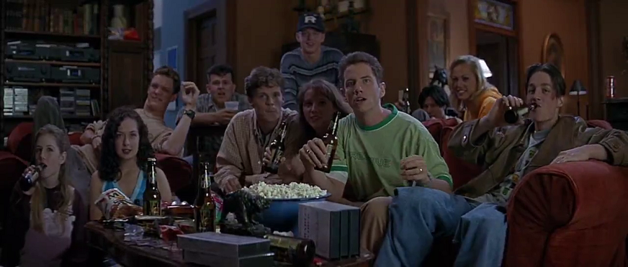
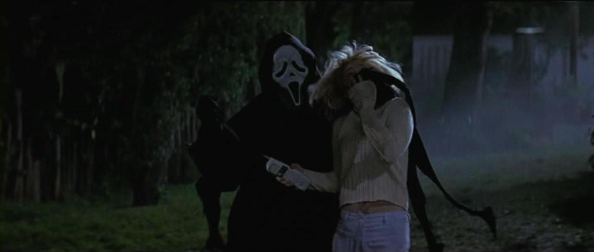

La estudiante Casey Becker está esperando a su novio Steve Orth cuando un misterioso hombre la llama por teléfono. Inofensivo al principio, la persona que llama empieza a amenazar a Casey, diciéndole que está observándola. Cuando Casey le advierte que Steve llegará pronto, la persona que llama revela que ha atado a Steve fuera del patio. Ahora histérica, Casey se ve obligada a responder a unas preguntas. Ella responde la segunda pregunta equivocada, dando como resultado la muerte de Steve. Cuando Casey se niega a contestar la última pregunta, el asesino entra en su casa.
El asesino tiene el aspecto de un fantasma vestido con un traje negro de monje capuchino y por eso se llama Ghostface (Cara de fantasma). Entra, rompe una ventana y al final Casey trata de escapar hacia fuera. Ahí es cuando ve a sus padres llegar a la casa y cree poder salvarse, pero Ghostface consigue apuñalarla, y ella es incapaz de pedir ayuda; finalmente es asesinada y destripada. Sus padres encuentran su cuerpo colgando de un árbol afuera.
La tragedia es difícil para su compañera Sidney Prescott, quien está tratando de lidiar con el próximo aniversario de un año de la violación y asesinato de su madre. La noche siguiente, se pone en comunicación con el asesino Ghostface, quien se burla de Sidney por teléfono, diciéndole que él era el que mató a su madre. En respuesta a las pruebas circunstanciales, Sidney acusa a su novio Billy Loomis de ser el atacante. Debido a que su padre está en viaje de negocios, pasa la noche siguiente con su mejor amiga Tatum y su hermano, Dewey Riley, un ayudante de policía. Una vez allí, recibe otra llamada telefónica de Ghostface, quien le dice a Sidney que el hombre condenado por matar a la madre de Sidney, Cotton Weary, en realidad era inocente. Esta llamada telefónica exculpa a Billy, quien sigue en la cárcel. La sospecha recae sobre el padre de Sidney, ya que estaba de viaje. Sidney se ve obligada a hacer frente a los medios de comunicación y a los periodistas que ya estaban cubriendo los sucesos, pero especialmente a Gale Weathers, quien previamente había escrito un libro en donde acusaba a la madre de Sidney de tener un romance con Cotton Weary, y especialmente llama a Sidney mentirosa, lo que lleva a una desconfianza amarga entre ellas.
Con el asesino aún libre y un número de estudiantes con máscaras Ghostface como bromas, las clases en la escuela son canceladas como medida de precaución, pero el director es apuñalado hasta la muerte en su despacho. Mientras, el novio de Tatum, Stu Macher, celebra una fiesta de final de clases, entre los invitados están Billy y Sidney, quienes se reconcilian y mantienen relaciones sexuales.
También asiste el cineasta aficionado Randy Meeks, quien explica a los demás asistentes a la fiesta las convenciones del género de terror, las cuales un personaje de la película está obligado a seguir adelante para sobrevivir: 1º: No practicar el sexo. 2º: No consumir drogas o alcohol. 3º: No decir "Enseguida vuelvo", porque no volverá con vida.
Stu le pide a Tatum que le traiga más cerveza, por lo que ella va al garaje, pero se encuentra con Ghostface.
Tras un diálogo donde ella demuestra creer que todo era una broma basándose en los sucesos que estaban pasando en Woodsboro, Ghostface la ataca, y tras una corta pero intensa lucha, Tatum trata de escapar por gatera de la puerta del garaje. Pero queda atrapada y Ghostface activa el portón haciendo que Tatum sea desnucada. Mientras tanto, Gale se cuela en la fiesta y se esconde una cámara de vídeo dentro de la casa antes de ir a investigar con Dewey la misteriosa aparición del automóvil del Sr. Prescott; es entonces cuando los asistentes a la fiesta se enteran de la muerte del director y la mayoría de ellos se dirigen a la escuela para ver su cadáver.
Ghostface aparece de nuevo y comienza a acosar a los que quedan por allí; ataca a Sidney y hiere a Billy, así que Sidney huye hacia la camioneta de Kenny (el camarógrafo de Gale), quien ve la aparición de Ghostface gracias a la señal de la cámara que puso Gale en la casa, pero se da cuenta de que hay un desfase de 30 segundos, y al salir de la camioneta es degollado.
Sidney logra escapar y hace autostop a Gale, que tenía el cadáver de Kenny en el parabrisas, pero lamentablemente provoca que Gale se estrelle. Después Dewey es apuñalado en la espalda en la casa; Sidney se encuentra con Randy y Stu, quienes se acusan mutuamente de ser el asesino, y ella no sabe en quién confiar. Billy reaparece herido en las escaleras y deja pasar a Randy, quien afirma que Stu se ha vuelto loco. Billy responde que "todos nos volvemos locos a veces" (citando a una frase que dijo Norman Bates de Psicosis) y dispara a Randy en el pulmón, revelando que él y Stu son Ghostface y que han estado usando un distorsionador de voz para hacerlos parecer una sola persona por teléfono.
También revelan que asesinaron a la madre de Sidney el año anterior, ya que tuvo un romance con el padre de Billy, lo que causó el abandono de su madre hacia él; Stu alegó "afán de superación" como su motivo para apoyar a Billy en su venganza. Ellos lo planean todo para que parezca que es el padre de Sidney el responsable de todos los asesinatos por la locura por la infidelidad de su mujer, y se apuñalan entre sí para fingir que han sido atacados por él.
De repente Gale aparece e intenta rescatar a Sidney y su padre utilizando una pistola, pero no quita el seguro de ésta con la que apunta a Billy y a Stu.
Sin embargo, la interferencia de Gale sirve como una distracción que le permite a Sidney escapar. Billy y Stu les buscan, y en la lucha que sigue, Stu muere electrocutado por caerle en la cabeza un televisor empujado por Sidney. Randy recupera la conciencia después de sobrevivir a la herida, pero entonces se tropieza con Billy, que está a punto de matar a Sidney. Gale salva la vida de Sidney con la pistola, esta vez sin seguro. Pero cuando Sidney, Randy y Gale creen estar a salvo, el presumiblemente muerto Billy vuelve a la vida una vez más (una convención de horror que Randy había predicho), pero Sidney rápidamente le dispara de nuevo a la cabeza, matándolo. Al amanecer, Gale hace un reportaje acerca de los asesinatos de la noche anterior, y se revela que Dewey sobrevivió a su ataque.
